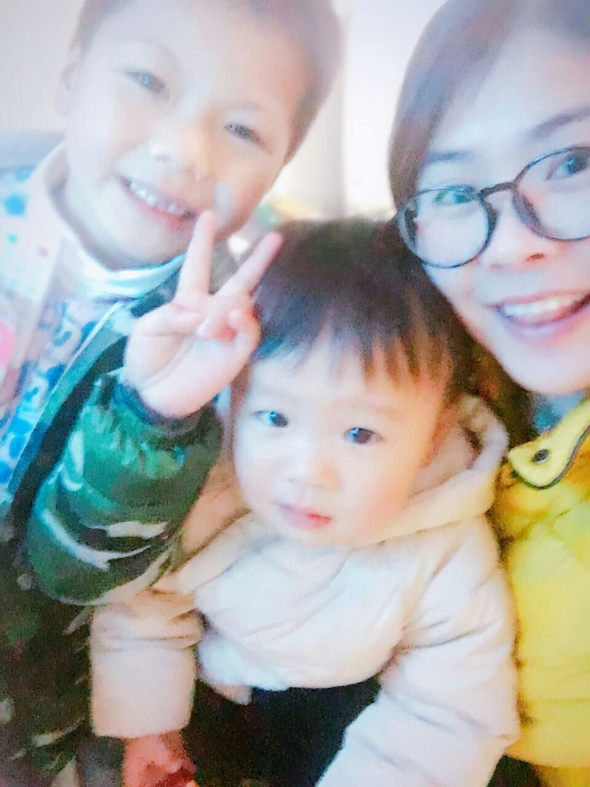

三人行
把最亲近的人放在第一眼，网页一打开就知道这是关于陪伴的相册。

Family album
在笑脸、生日蜡烛和日常拥抱里长大的小小主角。
Selected moments
我从桌面 Macchiato 素材里筛掉了重复连拍和构图较弱的图，保留清晰、表情自然、主题不同的照片与短视频。
把最亲近的人放在第一眼，网页一打开就知道这是关于陪伴的相册。
皇冠、蛋糕和蜡烛留下了明确的时间感，也让相册更像一段成长记录。
学习、吃饭、户外和短视频放在后面，让朋友慢慢看到生活里的细节。
Photos
Videos